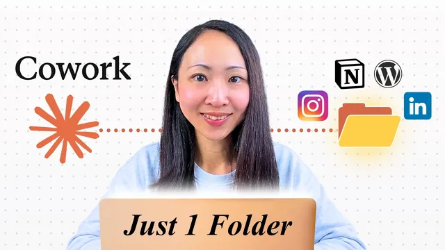

Claude Cowork + 스킬, 이게 새 콘텐츠 시스템입니다

원본 영상 보기 →
- 맥락, 스킬, 오케스트레이션을 따로 설계해요
- 스프레드시트가 시스템의 조종석이에요
- 스타일 라이브러리는 틀이 아니라 영감이에요
한 줄 요약
Grace는 Claude Cowork와 Skills, 스프레드시트 하나로 소셜 포스트 재가공, 카러셀, 광고 소재, SEO 블로그까지 돌리는 마케팅 콘텐츠 시스템을 가상의 카페 브랜드 Goldie Coffee로 처음부터 끝까지 보여 줘요. 폴더 구조와 단계별 시연이 구체적이라 그대로 따라 만들어 볼 수 있습니다.
전체 내용 정리
콘텐츠 시스템은 맥락, 스킬, 오케스트레이션 세 층으로 이뤄져요
Grace가 먼저 짚는 건 콘텐츠 시스템이라면 최소한 세 가지 층이 있어야 한다는 점이에요. 첫째는 맥락 층(context layer)으로 브랜드 지식, 말투, 타깃 고객, 제품이 여기 들어갑니다. 결과물이 "우리 브랜드답게" 나오게 만드는 부분이에요.
둘째는 스킬 층(skill layer)이에요. Skills(작업 방법을 적어 둔 재사용 지시서)가 특정 작업을 어떻게 수행할지 시스템에 알려 줍니다. 셋째는 오케스트레이션 층(orchestration layer)이고 도구가 연결된 Claude가 입력물을 읽고 알맞은 스킬을 돌린 다음 결과물을 내보내는 역할을 맡아요. Grace에 따르면 이 전체를 스프레드시트 한 장으로 조종할 수 있습니다.
데모 브랜드는 Goldie Coffee라는 스페셜티 카페예요. 프로젝트 폴더는 크게 두 덩어리로 나뉩니다. 하나는 system 폴더로, 안에 브랜드 맥락, 이 프로젝트 전용 스킬, 스크립트 폴더(script folder)가 들어 있어요. 다른 하나는 광고, SEO, 소셜처럼 실제 마케팅 콘텐츠를 작업하는 폴더고 여기에 프로젝트의 시스템 프롬프트 역할을 하는 CLAUDE.md 파일과 Excel로 만든 콘텐츠 플래너(content planner)가 함께 놓여요.
시작하기 전에 알아 둘 주의점이 하나 있어요. Claude Cowork(Claude Desktop 안에서 파일과 도구를 다루는 작업 모드)는 Claude Code와 달리 프로젝트 안의 스킬을 자동으로 읽어 오지 않습니다. 그래서 CLAUDE.md에 스킬 폴더 위치를 알려 주는 지시문을 적어 둬야 해요.
모든 프로젝트에 공통으로 적용하고 싶다면 Settings의 Cowork global instructions에 같은 지시문을 한 번만 넣어도 됩니다. 두 방법 모두 결과는 같다고 Grace는 설명해요.
블로그 글 세 편이 소셜 포스트 아홉 개와 이미지 여섯 장이 됐어요
첫 번째 사례는 콘텐츠 재가공(repurposing)이에요. Grace는 마케터가 가장 자주 하는 일이면서 ROI가 가장 높은 작업이라서 여기서 시작한다고 말합니다. 이유는 간단해요. 새로 만드는 게 아니라 이미 만든 콘텐츠에서 더 많은 가치를 뽑아내는(unlocking more value from content you have already made) 일이거든요.
입력물은 social 폴더의 input 폴더에 넣어 둔 블로그 글 세 편이에요. Cowork에서 같은 프로젝트 폴더를 고른 뒤 프롬프트로 블로그 내용을 읽고 여러 소셜 콘텐츠로 바꿔 달라고 요청합니다. 이미지도 같이 만들 거라서 Nano Banana MCP(이미지 생성 모델 Nano Banana를 Claude에 연결하는 도구)를 먼저 설치해 둬야 해요.
실행하면 Claude가 CLAUDE.md, 프로젝트 전용 스킬, 포스트 작성 프레임워크(post creation framework)를 차례로 불러옵니다. 눈여겨볼 대목은 병렬 에이전트를 Cowork가 알아서 띄운다는 점이에요. Grace의 말로는 Cowork에서 서브에이전트를 직접 만들 일이 99%는 없습니다.
결과는 금방 나왔어요. 포스트 아홉 개와 시각 자료 여섯 장이었고 전부 같은 원본 블로그 글에서 나왔습니다. 각 포스트에는 어느 원문을 썼는지, 포맷이 무엇인지, 훅(hook)이 어떤지, 비주얼 방향이 어떤지가 같이 적혀 있어요. 디자이너 동료에게 이미지를 넘겨야 할 때 그대로 전달할 수 있는 형태죠.
LinkedIn 포스트는 프레임워크에서 뽑은 글 구조와 훅을 따르고 뉴스레터 초안에는 제목 후보와 CTA(행동 유도 문구) 제안까지 붙어 나왔어요. 이미지는 포스트 내용에 맞춰 생성하되 글자는 넣지 말라고 일부러 요청했다고 해요. 파일은 모두 output 폴더에 저장됩니다. 물론 발행 전에 브랜드 목소리에 맞는지 사람이 검토해야 한다고 Grace는 덧붙여요.
카러셀은 스타일 라이브러리와 콘텐츠 플래너로 돌려요
두 번째는 카러셀 포스트(여러 장을 넘겨 보는 소셜 게시물)를 새로 만드는 시스템이에요. 핵심은 Grace가 스타일 라이브러리(style library)라고 부르는 폴더입니다. 예시 폴더 안에 카러셀 스타일 라이브러리가 있고 서로 다른 스타일의 참고 이미지가 모여 있어요.
여기서 중요한 건 이 템플릿을 그대로 따라 하라고 시키지 않는다는 점이에요. 영감을 주는 가이드로만 쓰도록 하죠. 스타일 가이드 파일도 따로 두는데, 이 파일 덕분에 Claude가 이미지를 매번 하나씩 분석하지 않고 라이브러리 내용을 빠르게 파악해요. 시각 자료의 입력과 출력은 visual 폴더가 맡습니다.
그리고 콘텐츠 플래너가 이 시스템의 사령탑(command center)이에요. 시트의 탭마다 콘텐츠 유형별 입력 항목이 정의돼 있고 첫 번째 탭은 앞선 재가공 데모에서 이미 채워 둔 상태입니다.
Cowork에서 같은 프로젝트 폴더를 고르고 프롬프트를 넣어요. 취지는 콘텐츠 플래너를 읽어서 상태가 비어 있는(Empty) 건에 대해 카러셀 포스트를 만들고 끝나면 플래너를 갱신하라는 거예요. Claude는 카러셀이 필요한 건이 다섯 세트라는 걸 읽어 내고 다섯 작업을 병렬로 띄워서 carousel post designer 스킬을 호출했어요.
곧 카러셀 이미지가 모두 23장 나왔고 플랫폼별로 캠페인 주제에 맞춰 묶인 채 포스트 문구까지 함께 생성됐습니다. Grace가 인상 깊게 본 건 템플릿을 똑같이 따르지 않고 변주를 줬다는 점이에요. 글이 많은 스타일도 있고 비주얼 위주인 스타일도 있어서 분위기가 제각각이었어요.
아쉬운 점도 분명히 짚어요. 브랜드 로고를 따로 주지 않았더니 로고가 카드마다 일관되지 않았다고 해요. 개선할 여지가 있는 부분이지만 빠른 목업이나 클라이언트용 브리프로는 충분히 쓸 만하다는 평가입니다. 작업이 끝난 뒤에는 플래너에 결과 파일 경로와 완료 상태가 적혀 있었어요. 스프레드시트 한 장만으로도 전체가 시스템처럼 돌아간다는 게 Grace의 설명이에요.
여기서 한 걸음 더 나가면 같은 대화 안에서 예약 작업(scheduled task)을 만들 수 있어요. 내장 슬래시 명령어 /schedule로 이 워크플로를 매주 금요일 오전 9시에 돌리도록 설정하고 내용을 확인한 뒤 진행하면 됩니다. 이미 만든 예약 작업은 목록에서 언제든 열어 고칠 수 있어요.
다만 현재는 Claude Desktop이 열려 있는 동안에만 예약 작업이 실행돼요. Grace의 팁은 사람의 승인이나 개입이 필요 없게 작업을 설계하라는 거예요. 그래야 에이전트가 스스로 끝까지 돌아갑니다.
로컬 폴더에 갇힌 콘텐츠를 Notion 캘린더로 보내는 배포 층을 붙여요
카러셀이 일정에 따라 알아서 생겨도 결과물은 아직 내 컴퓨터 폴더에 있을 뿐이에요. 팀이 보고 검토하고 발행하려면 배포 층(distribution layer)이 필요하다고 Grace는 말해요. 완성된 콘텐츠를 사람들이 승인하고 발행할 수 있는 곳으로 자동으로 보내는 장치죠.
이번에는 소셜 이미지 같은 미디어 파일까지 Notion 데이터베이스에 올려야 해요. 그래서 system의 script 폴더 안에 재사용할 Python 스크립트를 만듭니다. Grace는 이 스크립트를 작은 프로그램이라고 생각하면 된다고 해요. Claude가 API 키로 Notion에 미디어를 올려야 할 때마다 꺼내 쓰는 도구가 됩니다.
외부 API를 호출해 파일을 올려야 하므로 이 작업은 Cowork가 아니라 Claude Code로 해요. 순서는 이렇습니다.
- Claude Desktop에서 Claude Code로 전환합니다.
- 같은 프로젝트 폴더를 고릅니다.
- Notion MCP가 연결돼 있는지 확인합니다.
- 콘텐츠 플래너를 읽어서 Notion 상태 칸(schedule on notion)이 비어 있는 건마다 Notion 콘텐츠 캘린더에 새 항목을 만들라고 요청합니다.
Claude는 에이전트를 띄워서 Notion 항목 생성과 소셜 이미지 업로드를 할 일 목록(to-do list)으로 세워 처리했어요. Grace가 보기에는 불과 몇 초 만에 모든 항목이 Notion에 올라갔고 마지막으로 스프레드시트의 상태도 갱신됐습니다.
새로 만든 카러셀 포스트 여섯 개가 캘린더에 들어와 있었어요. 제목, 발행 예정일, 플랫폼, 상태, 포스트 문구가 모두 맞게 채워졌고 첨부 파일을 열어 보면 생성한 소셜 이미지도 함께 올라가 있었어요. 팀원은 이 Notion 캘린더만 열면 필요한 게 다 있고 거기서 바로 검토하고 댓글을 달 수 있습니다.
광고 소재는 브리프를 먼저 만들고 한 캠페인에 다섯 장씩 변형해요
광고 크리에이티브는 마케팅 팀의 시간과 예산이 가장 많이 들어가는 영역이라고 Grace는 말해요. 크리에이티브 브리프, 비주얼 방향, 무엇이 잘 먹히는지 테스트할 만한 충분한 변형이 모두 필요하니까요. 이 시스템은 캠페인에서 브리프로, 다시 대량 변형 소재로 이어지는 흐름을 처리합니다.
준비물은 먼저 광고용 스타일 라이브러리예요. 성과가 좋았던 참고 소재를 모아 두는데, 정적 광고와 카러셀 광고가 모두 들어가고 광고 크리에이티브 스타일 가이드도 함께 둡니다. 그다음 ads 폴더의 input 폴더에 참고 이미지를 넣어요. 자사 제품 사진, 경쟁사 참고 이미지, 스튜디오 배경 등이 해당하는데, 이번에는 모델이 꼭 참고하길 바라는 제품 이미지 두 장을 넣었어요.
콘텐츠 플래너의 Ad 탭에는 캠페인 이름, 제품과 오퍼, 캠페인 목표, 플랫폼 등을 적어 둡니다. 첫 단계는 크리에이티브 브리프 생성이고 프롬프트는 콘텐츠 플래너를 불러와서 캠페인마다 브리프를 만들라는 취지예요. Claude는 병렬 에이전트로 다섯 캠페인을 한꺼번에 처리하며 ad creative brief 스킬을 사용했어요.
브리프 다섯 개가 금세 완성됐습니다. 모두 미리 만든 템플릿을 따르는데, 캠페인 개요, 타깃 오디언스, 핵심 메시지, 훅 변형, 크리에이티브 방향이 일관된 구조로 정리돼 있어요. 템플릿은 상황에 맞게 고칠 수 있고 결과는 캠페인 이름별로 output 폴더에 저장됩니다.
이제 소재를 만들 차례예요. 다시 Cowork에서 모든 브리프를 읽고 요구사항을 파악한 뒤 광고 소재를 만들라고 요청해요. Claude는 광고 스타일 가이드를 열고 creative designer 스킬을 호출하며 다섯 세트를 만들 에이전트를 띄웁니다. Grace는 시스템 기본값을 디자인 하나당 광고 소재 다섯 장으로 정해 두었기 때문에 다섯 캠페인에서 총 25장이 나왔다고 해요.
결과물은 브리프와 같은 캠페인 폴더에 저장됩니다. Grazing Cups 참고 이미지를 쓴 캠페인에서는 Nano Banana가 다섯 가지 변형 모두에 그 이미지를 반영했고 분위기가 제각각이라 영감을 얻기 좋았어요. 가을 호박 시즌 캠페인도 참고 이미지를 기준점 삼아 잘 만들어졌습니다.
그래도 아직 바로 쓸 수 있는 수준은 아니라고 Grace는 선을 그어요. 로고와 태그라인은 손봐야 하죠. 다만 여러 포맷과 지면에서 우리 제품이 실제 캠페인에서 어떻게 보일지 폭넓게 감을 잡기에는 좋아요. 팁이 하나 있어요. 참고 이미지를 더 많이 넣을수록 최종 결과가 원하는 모습에 가까워집니다.
SEO 블로그는 브리프에서 초안, 헤더 이미지, WordPress 임시 저장까지 한 번에 가요
마지막은 장기적으로 가장 크게 쌓이는 채널인 오가닉 검색이에요. 문제는 콘텐츠 제작에 시간이 제일 많이 든다는 거죠. 그래서 콘텐츠 브리프로 블로그 글을 한꺼번에 쓰고 헤더 이미지를 만들고 웹사이트에 초안 상태로 곧장 올리는 시스템을 만듭니다.
먼저 블로그 콘텐츠 브리프 템플릿을 만들고 AI search blog writing 스킬과 함께 씁니다. 브리프는 이미 여러 개 만들어 output 폴더의 SEO 아래에 모아 뒀어요. 각 브리프에는 주제와 키워드 전략, 콘텐츠 앵글, 구조와 포맷, AI 검색 최적화 메모가 들어 있어서 작업 과정이 표준화됩니다.
Grace가 강조하는 핵심은 이 브리프들을 콘텐츠 플래너에 등록해 두는 거예요. 플래너에는 목표 주제, 콘텐츠 앵글, 브리프 파일 경로, 상태가 들어갑니다.
Cowork에서는 생성된 브리프를 읽고 블로그 초안을 쓴 다음 대표 이미지(feature header image)까지 만들라고 요청해요. Claude는 AI search blog writing 스킬로 브리프를 모두 읽고 병렬로 글 쓰는 에이전트를 띄웁니다. 글이 끝나면 블로그마다 헤더 이미지 생성 작업이 이어지고 전체에 약 15분이 걸려요.
각 초안은 브리프를 따라 목차(table of contents), 핵심 요약(key takeaways), 불릿 포인트, 구조화된 서식을 갖췄고 글 내용에 맞는 헤더 이미지도 함께 나옵니다. 여기서 한 단계 더 가요. 이 초안들을 웹사이트에 바로 올리는데, 이번 사이트는 WordPress예요. WordPress MCP 도구가 필요하고 이미지를 외부 API로 업로드하니 이번에도 Claude Code를 씁니다.
Claude Code 데스크톱에서 초안을 하나씩 읽고 헤더 이미지와 함께 새 초안으로 WordPress에 올리라고 요청해요. Claude는 콘텐츠 플래너를 불러와 글 일곱 편의 할 일 목록을 짜고 하나씩 처리했어요.
Grace의 팁이 하나 더 있어요. 작업 중에 컨텍스트 창(context window) 한도에 걸리면 내장 슬래시 명령어 /compact로 공간을 비울 수 있습니다. 더 나은 방법은 작업을 아예 여러 Claude Code 세션으로 나누는 거예요.
곧 일곱 편이 모두 사이트에 초안으로 생성됐어요. 관리자 화면에서 확인하니 글마다 대표 이미지가 올라가 있었고 AI 검색에 맞춘 서식도 로컬 초안과 똑같았습니다. 그래도 Grace는 게시 전에 사람이 먼저 검토하라고 권해요. 자기만의 인사이트와 고유한 데이터, 그래픽을 더해야 한다는 거죠. 그렇게만 하면 시간 절감 효과는 아주 크고 같은 파이프라인을 일정에 맞춰 돌려서 새 초안이 늘 쌓여 있게 할 수도 있어요.
핵심 인사이트
- 맥락, 스킬, 오케스트레이션을 따로 설계해요: Grace는 브랜드 맥락(말투·고객·제품), 반복 작업 지시서(Skills), 도구를 엮는 Claude를 세 층으로 나눠 놓았어요. 층마다 역할이 분명해서 한 부분을 고쳐도 시스템 전체가 흔들리지 않습니다.
- 스프레드시트가 시스템의 조종석이에요: 콘텐츠 플래너의 탭과 상태 칸이 무엇을 만들지, 어디까지 끝났는지를 알려 줘요. 상태가 비어 있는 건만 골라 작업하고 결과 경로와 완료 상태를 다시 적게 하면 사람이 일일이 지시하지 않아도 돼요.
- 스타일 라이브러리는 틀이 아니라 영감이에요: 참고 이미지와 스타일 가이드를 주되 그대로 따라 하라고 하지 않으면 변주가 생겨요. 카러셀과 광고 모두 이 방식으로 다양한 분위기가 나왔습니다.
- Cowork와 Claude Code는 역할이 달라요: 폴더 안의 파일을 읽고 만드는 일은 Cowork에서, 이미지 업로드처럼 외부 API가 필요한 일은 Claude Code에서 처리했어요. Notion 업로드와 WordPress 업로드가 모두 그런 경우예요.
- 결과물은 아직 초안이라서 사람의 마무리가 필요해요: 로고가 들쭉날쭉하고 태그라인이 어색한 점이 있었고 블로그는 고유한 데이터와 인사이트가 빠져 있어요. 시스템이 초안을 대량으로 만들고 사람은 검토와 보강에 집중하는 구조예요.
오늘 당장 해볼 것
- 프로젝트 폴더 하나를 만들고
system(브랜드 맥락, 스킬, script 폴더)과 작업 폴더(social, ads, SEO), CLAUDE.md, 콘텐츠 플래너 스프레드시트를 갖춰 보세요. Grace의 Goldie Coffee 구조를 그대로 따라 하면 뼈대가 금방 잡혀요. - CLAUDE.md에 스킬 폴더 위치를 알려 주는 지시문을 적어 보세요. Cowork는 프로젝트 스킬을 자동으로 읽지 않아서 이 한 줄이 없으면 스킬이 호출되지 않아요. 모든 프로젝트에 쓰고 싶다면 Settings의 Cowork global instructions에 같은 내용을 넣으면 됩니다.
social/input폴더에 이미 쓴 블로그 글 몇 편을 넣고 Cowork에서 같은 프로젝트 폴더를 골라 소셜 포스트로 바꿔 달라고 요청해 보세요. 이미지까지 받으려면 Nano Banana MCP를 먼저 설치합니다. 새로 쓰는 것보다 훨씬 적은 노력으로 결과가 나오는지 바로 확인할 수 있어요.- 콘텐츠 플래너에 상태 칸을 만들고 Cowork에게 "상태가 비어 있는 행만 읽어 콘텐츠를 만들고 끝나면 결과 파일 경로와 완료 상태를 적어 달라"고 시켜 보세요. 반복 업무가 시스템으로 바뀌는 순간을 직접 경험할 수 있어요. 익숙해지면 /schedule로 매주 금요일 오전 9시처럼 실행 시점을 정해 두세요. 승인이 필요 없게 설계해야 Claude Desktop만 켜져 있어도 스스로 돌아갑니다.
- 만든 콘텐츠를 팀과 공유하려면 Claude Code로 전환해 Notion MCP를 연결하고 플래너에서 Notion 상태가 빈 건마다 Notion 콘텐츠 캘린더에 항목을 만들게 해 보세요. 이미지가 있으면 script 폴더에 업로드용 Python 스크립트를 두고 API 키로 올리게 하면 됩니다. 작업이 길어져 컨텍스트가 차면 /compact를 쓰거나 세션을 나누세요.